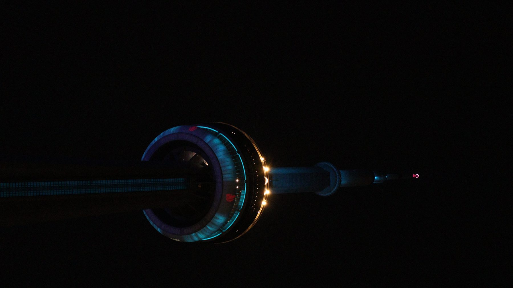
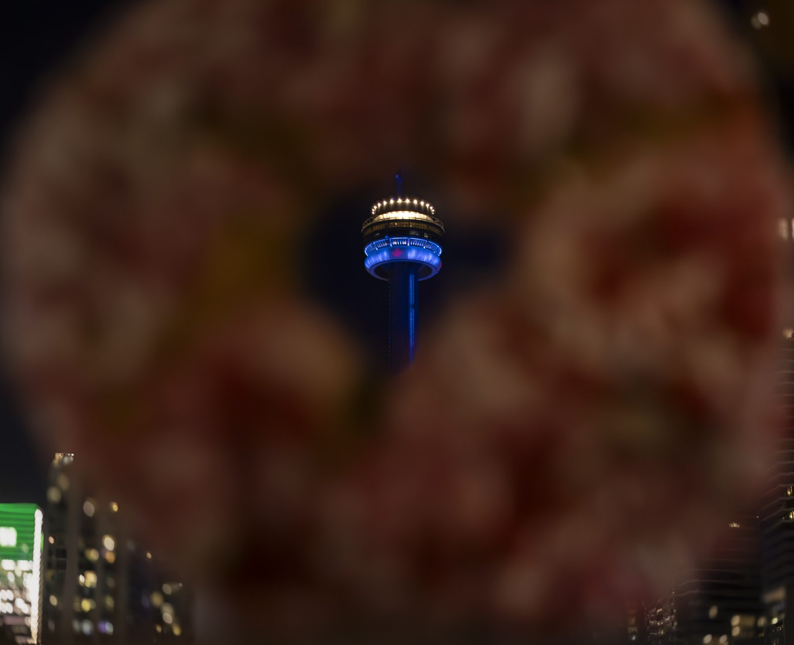
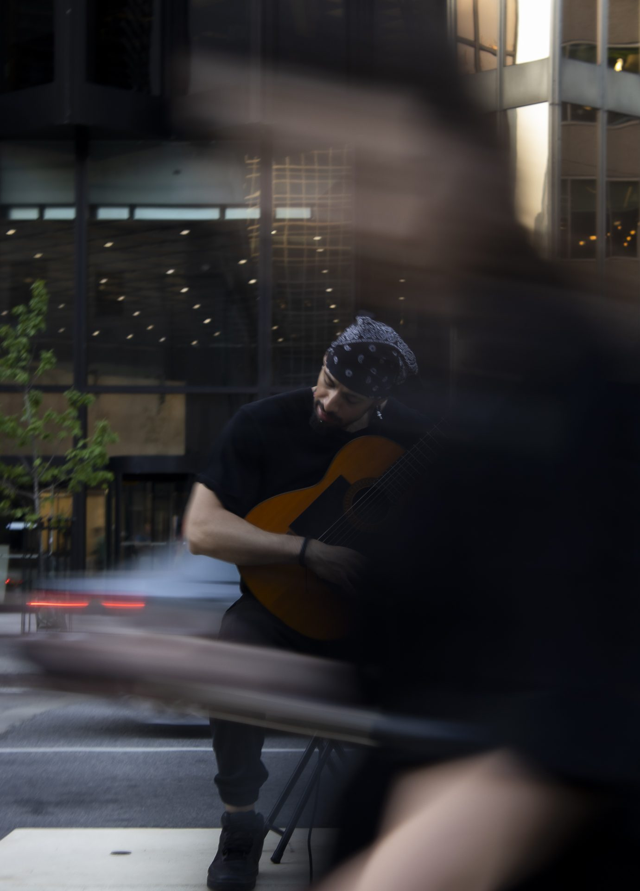
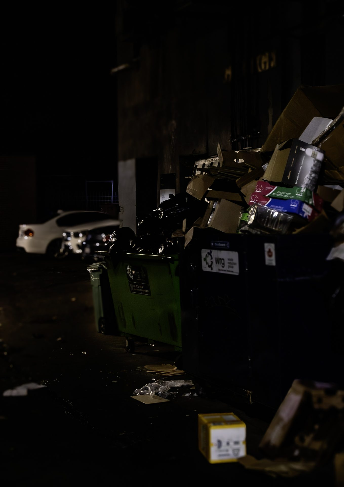
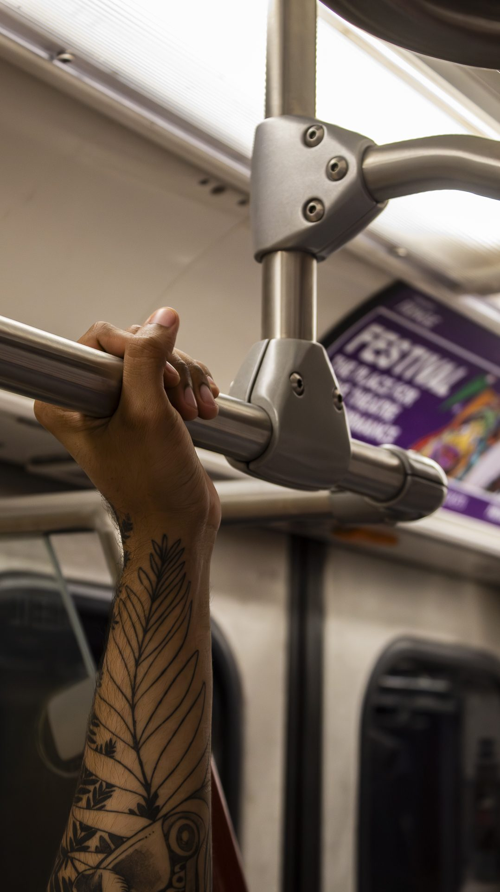

01 / Case study
Five Senses of Toronto
Can a photo make you hear something? Or taste it? This series tries to put each of the five senses into a single frame, all shot around Toronto at night, with the CN Tower showing up as a thread through the set.

Sight & sound
For sight, the CN Tower is framed through the hole of a doughnut, so your eye has to look through something to find it. For sound, a street guitarist stays sharp while the people rushing past blur out, so the music feels like the only still thing on the street.


Smell, taste & touch
Smell is the side of the city nobody puts on a postcard: overflowing bins in a dark alley. Taste brings the doughnuts back up close with the tower glowing behind them, and touch is a tattooed hand gripping the pole on a subway ride.


Next project →